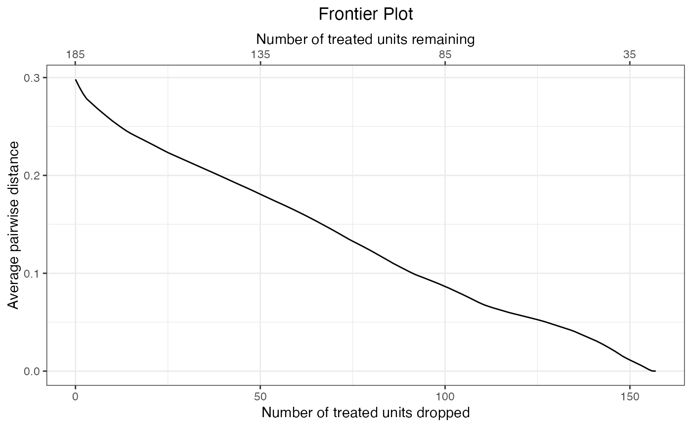

Compute the balance-sample size frontier
makeFrontier.RdmakeFrontier() computes the balance-sample size frontier, a function relating the size of a subset of the original sample to the least imbalance possible for that subset given an imbalance metric and a quantity of interest (i.e., estimand). The user can visualize the frontier using plot() methods, then pick a point along the frontier that represents what they consider to yield the optimal bias-variance tradeoff or estimate treatment effects at each point.
makeFrontier(x, ...)
# S3 method for formula
makeFrontier(formula,
data,
QOI = 'FSATT',
metric = 'dist',
breaks = NULL,
distance.mat = NULL,
ratio = NULL,
verbose = TRUE, ...)
# S3 method for data.frame
makeFrontier(x,
treatment,
match.on,
QOI = 'FSATT',
metric = 'dist',
breaks = NULL,
distance.mat = NULL,
ratio = NULL,
verbose = TRUE, ...)
# S3 method for matchFrontier
print(x, ...)Arguments
- formula
a two-sided
formulaobject containing the treatment and covariates to be used in creating the distance measure used in the matching, e.g.,A ~ X1 + X2 + ...whereArepresents the treatment variable andX1andX2are covariates.- x
for
makeFrontier(), a data frame containing the variables named intreatmentandmatch.on.For
print(), amatchFrontierobject; the output of a call tomatchFrontier().- data
a data frame containing the variables included in
formula.- treatment
a string containing the name of the treatment variable. Only required for the
data.framemethod.- match.on
a string containing the name of the covariates variable to match on. Only required for the
data.framemethod.- QOI
the quantity of interest (i.e., estimand); allowable options include
'SATE','FSATE','SATT', and'FSATT'. See Details. Default is'FSATT'. Not allQOIs can be used with allmetrics.- metric
the imbalance metric to be minimized; allowable options include
"dist",'L1','L2', and'energy'. See Details. Default is'dist'. Not allmetrics can be used with allQOIs. Prior version of the package allowed slightly different options, which are still supported; see Notes section.- breaks
when
metricis'L1'or'L2', a named list containing a single number giving the number of bins for each or a string corresponding to a method of computing the number of bins for each covariate; for example,list(X1 = 4, X3 = "sturges"). Allowable strings include"sturges","scott", and"fd", which use the functionsnclass.Sturges(),nclass.scott(), andnclass.FD(), respectively. The default is"sturges"for variables that are not listed or if no argument is supplied. Can also be a single value to be applied to all numeric variables, or the single value"median"(see Details). Similar to thecutpointsargument ofMatchIt::matchit()withmethod = "cem". Ignored for othermetrics.- distance.mat
when
metricis'dist'or'energy', the distance measure used to define the distance between units. Can be"mahalanobis"for the Mahalanobis distance,"scaled_euclidean"for the Euclidean distance on the standardized covariates,"euclidean"for the Euclidean distance on the raw covariates,"robust_mahalanobis"for the robust Mahalanobis distance, or a numeric distance matrix. When supplied as a numeric matrix, formetric = 'dist', should be a distance matrix either with one row for each treated unit and one column for each control unit (i.e., an N1 by N0 matrix) or a row and column for each unit (i.e., an N by N matrix); and formetric = 'energy', should be a full N by N distance matrix with a row and column for each unit. The default formetric = 'dist'is"mahalanobis"and formetric = 'energy'is"scaled_euclidean". See Details. Abbreviations allowed. Ignored for othermetrics.- ratio
for pair distance-based frontiers, the number of matched each unit receives;
NULLmeans the same as 1. For bin-based frontiers and energy distance-based frontiers whenQOIis not'SATT', units will only be dropped from the control group until the ratio between the group size isratio, at which point the group size will remain atratioas units from both groups are dropped. WhenNA(the default), there is no restriction on the group sizes.- verbose
logical; whether to print additional information about the frontier constructing process.- ...
arguments passed to other methods (ignored).
Details
makeFrontier() computes the matching frontier for a given dataset, quantity of interest (QOI), and imbalance metric. The frontier describes the relationship between the size of the remaining sample and the lowest imbalance possible given that sample size. How the frontier is formed depends on the QOI and imbalance metric. Three types of frontier are currently available depending on the argument supplied to metric: pair distance-based frontiers ('dist'), bin-based frontiers ('L1' and 'L2') and energy distance-based frontiers ('energy'). These are described briefly below and in more detail vignette("MatchingFrontier").
Pair distance-based frontiers
With a pair distance-based frontier, each unit is paired with the closest unit of the opposite treatment group, where the distance is measured as the Mahalanobis distance, the Euclidean distance on the raw or standardzied covariates, or a user-supplied distance, as determined by the distance.mat argument. Pairing is done with replacement so units can be paired to multiple units at a time. The average distance between each unit and its paired unit is used as the imbalance metric. The frontier is formed by dropping one unit at a time, starting with the unit that is farthest from its paired unit. If two units are equally far from their respective paired units, they are both dropped. In this way, the imbalance metric will decrease monotonically until no units remain or all remaining pairs contain identical members. These frontiers can only be used when the QOI is the FSATE or FSATT.
Bin-based frontiers
Bin-based frontiers involve assigning each unit into a bin based on its unique combination of coarsened covariates. The frontier is formed by dropping one unit at a time, in particular, the unit that when dropped would yield the greatest decrease in the imbalance metric. Bin-based frontiers are formed by subset selection rather than pairing; units are not paired with each other, and the initial point of the frontier is computed on the unmodified sample (in contrast to pair distance-based frontiers, where the initial point is computed after pairing). Bin-based frontiers can be thought of as a close relative to coarsened exact matching, as implemented in cem and MatchIt (i.e., using matchit() with method = "cem").
These frontiers can be used when the QOI is the FSATE or SATT. The imbalance metrics include the L1 and L2 statistic, which summarize the discrepancy between the relative proportions of treated and control units in each bin. Bins can be computed by supplying a method of computing bins for each covariate to breaks, or they can be computed automatically as the bins that yield the median value of the imbalance metric across a random sample of binnings by specifying breaks = "median". Because this involves a random process, a seed should be set prior to running to ensure results are replicable.
Energy distance-based frontiers
Like bin-based frontiers, energy distance-based frontiers involve subset selection rather than pairing. The frontier is formed by dropping one unit at a time, in particular, the unit that when dropped would yield the lowest value of the imbalance metric. The imbalance metric is the energy distance, a scalar measure of the difference between two multivariate cumulative density functions. In each sample, each unit's contribution to the energy distance is computed, and the unit with the greatest contribution is dropped. The energy distance-based frontier is non-monotonic; there is often a point when discarding additional units increases rather than decreases the imbalance metric.
These frontiers can be used when the QOI is the SATE, FSATE, or SATT. For the SATE, the energy distance is computed as Huling and Mak's (2020) "improved" energy distance, which is the sum of the energy distance between the treated group and the original full sample, the energy distance between the control group and the full sample, and the energy distance between the treated and control groups. Units from either group may be dropped. As the energy distance decreases, the resulting groups each increasingly resemble the full sample and each other. For the FSATE, the energy distance is computed only between the treated and control groups. For the SATT, the energy distance as computed only between the treated and control groups, but only control units can be dropped. The energy distance is a function of the pairwise distances between units, which must be specified using the distance.mat argument. Huling and Mak (2020) used the Euclidean distance on the standardized covariates (distance.mat = "scaled_euclidean"), but the Mahalanobis distance is another good option when there are many correlated covariates.
Quantities of interest (QOIs)
The QOI argument can be set to control the estimand, i.e., the group to which the effect is meant to generalize. The sample average treatment treatment effect (SATE) is the average effect of treatment in the entire sample. The feasible sample average treatment effect (FSATE) is the average effect of treatment in the sample remaining after units form both groups are dropped. The sample average treatment effect in the treated (SATT) is the average effect of treatment in the sample of those who were treated. The feasible sample average treatment effect in the treated (FSATT) is the average effect of treatment in the sample of treated units after some treated units are dropped.
Note
In prior versions of MatchingFrontier, it was possible to supply a different set of arguments to metric. These can still be supplied, annd they will be automatically transofmred into the corresponding new versions of the arguments.
For pair distance-based frontiers, it was possible to specify metric as "mahal", "euclid", or "custom". Specifying metric = 'mahal' now sets metric = 'dist' and distance.mat = "mahalanobis". Specifying metric = 'euclid' now sets metric = 'dist' and distance.mat = "euclidean". Specifying metric = 'custom' now sets metric = 'dist' and leaves distance.mat to be supplied by the user.
For bin-based frontiers, it was possible to specify metric as 'L1', 'L2', 'L1median', or 'L2median'. Specifying 'L1median' or 'L2median' now sets metric = 'L1' or 'L2', respectively, and sets breaks = "median".
For energy-based frontiers, metric could only be specified as 'energy', but now distance.mat can be specified to request a specific distance matrix to be used to compute the energy distance; in the past, distance.mat was only used for supplying custom distance matrices.
Value
A matchFrontier object, which contains the matching frontier as well as information about the the function call.
- frontier
the matching frontier, which contains four components:
drop.order: a list containing the index of the units dropped at each point on the frontier. The first entry will be empty, indicating that no units have been dropped.Xs: a vector containing the cumulative number of units dropped at each point on the frontier. The first value will be 0.Ys: a vector containing the value of the imbalance metric at each point on the frontier.Y.origin: the value of the imbalance metric prior to dropping any units (i.e., at the first point on the frontier).
- treatment
the name of the treatment variable.
- QOI
the argument supplied to
QOI.- metric
the argument supplied to
metric.- data
the dataset containing the units.
- match.on
a vector of the names of the covariates used in the matching.
- matched.to
with a pair distance-based metric, the indices of the units to which each unit is paired. When
QOIis'FSATT', control units will haveNAvalues.- call
the original call to
makeFrontier().- n
the number of units present at the first point in the frontier (i.e., the original sample). For the FSATT, this is the number of treated units; for the SATT, this is the number of control units.
References
King, G., Lucas, C., & Nielsen, R. A. (2017). The Balance-Sample Size Frontier in Matching Methods for Causal Inference. American Journal of Political Science, 61(2), 473-489. doi:10.1111/ajps.12272
See also
summary.matchFrontier() for viewing a summary of the frontier.
plot.matchFrontier() for plotting the frontier.
generateDataset() and frontier_to_matchit() for extracting a dataset or matchit object at one point on the frontier.
estimateEffects() for estimating effects along the frontier.
MatchIt::matchit() for a more traditional form of matching at a single point on the theoretical frontier.
Examples
data("lalonde", package = "MatchIt")
#Mahalanobis pair distance frontier for FSATT
f1 <- makeFrontier(treat ~ age + educ + married + re74,
data = lalonde, QOI = "FSATT",
metric = "dist", verbose = FALSE)
f1
#> A matchFrontier object
#> - quantity of interest: FSATT
#> - imbalance metric: average pairwise distance
#> - treatment: treat
#> - covariates: age, educ, married, re74
#> - number of points: 118
plot(f1)

summary(f1)
#> Summary of matchFrontier object:
#>
#> N treated N control N total Statistic
#> Start 185 185 0.2981
#> End 28 28 0.0000
#> Best 28 28 0.0000
#> ^
summary(f1, N = c(20, 40, 60))
#> Summary of matchFrontier object:
#>
#> N treated N control N total Statistic
#> At N = 60 60 60 0.0526
#> At N = 40 40 40 0.0225
#> At N = 28 28 28 0.0000
#> ^
#L1 distance frontier for FSATE
f2 <- makeFrontier(treat ~ age + educ + married + re74,
data = lalonde, QOI = "FSATE",
metric = "L1", verbose = FALSE)
f2
#> A matchFrontier object
#> - quantity of interest: FSATE
#> - imbalance metric: L1 statistic
#> - treatment: treat
#> - covariates: age, educ, married, re74
#> - number of points: 438
plot(f2)
 summary(f2)
#> Summary of matchFrontier object:
#>
#> N treated N control N total Statistic
#> Start 185 429 614 0.6528
#> End 59 118 177 0.0000
#> Best 59 118 177 0.0000
#> ^
#Energy distance frontier for SATE
f3 <- makeFrontier(treat ~ age + educ + married + re74,
data = lalonde, QOI = "SATE",
metric = "energy", verbose = FALSE)
f3
#> A matchFrontier object
#> - quantity of interest: SATE
#> - imbalance metric: energy distance
#> - treatment: treat
#> - covariates: age, educ, married, re74
#> - number of points: 508
plot(f3)
summary(f3)
#> Summary of matchFrontier object:
#>
#> N treated N control N total Statistic
#> Start 185 429 614 0.5903
#> End 14 14 28 0.1431
#> Best 49 222 271 0.0326
#> ^
summary(f3, Ndrop = seq(300, 500, by = 50))
#> Summary of matchFrontier object:
#>
#> N treated N control N total Statistic
#> At Ndrop = 300 49 265 314 0.0334
#> At Ndrop = 349 49 216 265 0.0326
#> At Ndrop = 400 49 165 214 0.0329
#> At Ndrop = 450 49 115 164 0.0343
#> At Ndrop = 500 49 65 114 0.0378
#> ^
summary(f2)
#> Summary of matchFrontier object:
#>
#> N treated N control N total Statistic
#> Start 185 429 614 0.6528
#> End 59 118 177 0.0000
#> Best 59 118 177 0.0000
#> ^
#Energy distance frontier for SATE
f3 <- makeFrontier(treat ~ age + educ + married + re74,
data = lalonde, QOI = "SATE",
metric = "energy", verbose = FALSE)
f3
#> A matchFrontier object
#> - quantity of interest: SATE
#> - imbalance metric: energy distance
#> - treatment: treat
#> - covariates: age, educ, married, re74
#> - number of points: 508
plot(f3)
summary(f3)
#> Summary of matchFrontier object:
#>
#> N treated N control N total Statistic
#> Start 185 429 614 0.5903
#> End 14 14 28 0.1431
#> Best 49 222 271 0.0326
#> ^
summary(f3, Ndrop = seq(300, 500, by = 50))
#> Summary of matchFrontier object:
#>
#> N treated N control N total Statistic
#> At Ndrop = 300 49 265 314 0.0334
#> At Ndrop = 349 49 216 265 0.0326
#> At Ndrop = 400 49 165 214 0.0329
#> At Ndrop = 450 49 115 164 0.0343
#> At Ndrop = 500 49 65 114 0.0378
#> ^